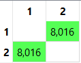
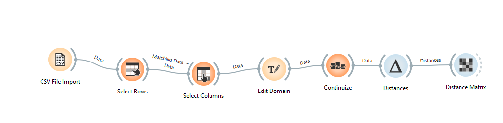
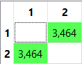

Distance in Student Data#
perhitungan manual menggunakan 2 mahasiswa dari dataset asli (misal diambil dari baris pertama dan kedua dataset):
Numerik → Normalisasi
Nominal → Simple Matching
Ordinal → Ranking + Normalisasi
Binary → Simple Matching
Data Dua Mahasiswa#
Misalkan dari dataset diperoleh:
Atribut |
Mahasiswa 1 |
Mahasiswa 2 |
|---|---|---|
Usia |
18 |
25 |
Semester |
5 |
3 |
IPK |
2.22 |
3.72 |
Jumlah_Organisasi |
1 |
4 |
Jenis_Kelamin |
Perempuan |
Perempuan |
Program_Studi |
Manajemen |
Sistem Informasi |
Tingkat_Kepuasan |
Sedang |
Rendah |
Motivasi_Belajar |
Rendah |
Sangat Tinggi |
Status_Beasiswa |
Tidak |
Ya |
Status_Kerja |
Part Time |
Full Time |
Hitung Jarak Tiap Atribut#
A. Atribut Numerik (Normalisasi)#
Euclidean#
Kita ambil sampel data pertama dan kedua untuk menghitung jarak dari kedua data tersebut. Fitur yang merupakan tipe data numerik adalah Usia, Semester, IPK, Jumlah_Organisasi.
Dari fitur Tersebut, diambil data pertama dan kedua untuk dihitung jaraknya, dan didapatkan hasilnya sebagai berikut
Implementasi Euclidean Orange#
{kind=link}

B. Atribut Nominal (Simple Matching)#
Jenis_Kelamin
Sama → 0
Program_Studi
Berbeda → 1
Status_Kerja
Berbeda → 1
C. Atribut Binary#
Status_Beasiswa#
Berbeda (Tidak vs Ya) → 1
D. Atribut Ordinal#
Konversi Ranking#
Tingkat_Kepuasan:
Rendah = 1
Sedang = 2
Tinggi = 3
Motivasi_Belajar:
Sangat Rendah = 1
Rendah = 2
Sedang = 3
Tinggi = 4
Sangat Tinggi = 5
Tingkat_Kepuasan#
Mahasiswa 1 = Sedang (2)
Mahasiswa 2 = Rendah (1)
Normalisasi:
Karena M = 3
Mahasiswa 1:
Mahasiswa 2:
Jarak:
Motivasi_Belajar#
Mahasiswa 1 = Rendah (2)
Mahasiswa 2 = Sangat Tinggi (5)
M = 5
Mahasiswa 1:
Mahasiswa 1:
Mahasiswa 2:
Jarak:
Hitung Total Jarak#
Hitung Nilai Akhir :
Hasil akhir jarak Euclidean antara data 1 dan data 2 adalah sekitar :
Implementasi Orange#
{kind=link}

{kind=link}

Perbedaan nilai jarak antara perhitungan manual dan hasil pada Orange terjadi karena pada perhitungan manual digunakan konsep Gower Distance yang menormalisasi tiap atribut dan menghitung rata-rata jarak. Sedangkan pada Orange, data kategorikal terlebih dahulu diubah menjadi numerik menggunakan one-hot encoding melalui widget Continuize, kemudian jarak dihitung menggunakan Euclidean Distance. Perbedaan metode ini menyebabkan nilai jarak yang dihasilkan tidak identik.